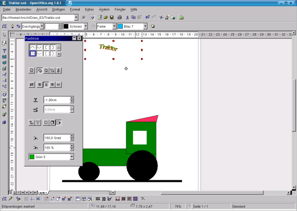

| [zurück] | [Hauptmenü] | [weiter] |
| [PDF] | ||
Textfelder und Fontwork
Jetzt können Sie Ihrer Zeichnung noch eine schöne Überschrift verleihen:
Klicken Sie einmal auf die Schaltfläche „Text“
 .
Wenn Sie jetzt die Maus in die Zeichnung bewegen, verwandelt sich
der Cursor in ein Kreuz mit Textcursor.
.
Wenn Sie jetzt die Maus in die Zeichnung bewegen, verwandelt sich
der Cursor in ein Kreuz mit Textcursor.Jetzt ziehen Sie ein Textfeld auf, wie Sie das von anderen Objekten gewohnt sind. In dem erscheinenden Objekt kann man nun wie in einem Textdokument schreiben.
Schreiben Sie nun z. B. zu unserem Traktor die Überschrift „Traktor“ hinein.
Natürlich können Sie die erstellte Überschrift auch bogenförmig gestalten:
Sie markieren das Textobjekt.
Gehen ins Menü Format, Untermenü Fontwork.
-

Abbildung 1: der Dialog "FontWork"
Darauf öffnet sich der Dialog „FontWork“.
Hier können Sie die Kontur der Schriftkurve, Schatten bei schräger und seitlicher Beleuchtung und die Schattenfarbe einstellen. Die Texteigenschaften lassen sich über die gewohnten Schaltflächen in der Werkzeugleiste Format einstellen.